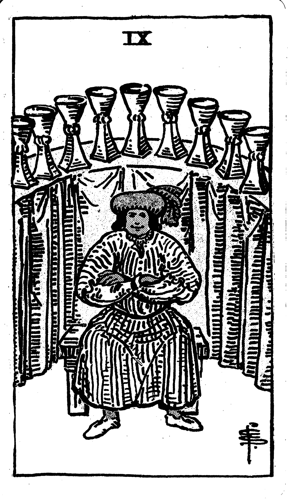

Philosophy and Spirituality
The Number 9 in Philosophy: Wisdom and Completion
The number 9 is particularly significant in various philosophical traditions, symbolizing wisdom, compassion, and completion. Often associated with universal love and spiritual awakening, the number 9 represents the culmination of experiences and the attainment of higher consciousness. It signifies not only the end of a cycle but the wisdom accumulated throughout that cycle, allowing for the individual to move forward with greater insight and clarity. In some traditions, 9 is believed to represent the highest achievement within a given cycle of existence—where one is fully prepared to transcend the material world and enter a higher state of spiritual awareness.
Plato, in his work “Timaeus,” alluded to the number 9 when discussing the soul’s progression toward divinity. The soul, according to Plato, is connected to the divine through a cosmic cycle of development, with the ultimate goal being unity with the divine mind. The number 9 in this context represents the final stages of this cycle—wisdom attained through experience and the culmination of personal growth that aligns with the divine order.
The number 9 also plays a central role in Pythagorean philosophy, where it was considered the number of completion. The Pythagoreans were deeply spiritual and saw the number 9 as the highest representation of divine harmony. They believed that each number had a spiritual significance, and 9 was the number that symbolized the fulfillment of the soul’s journey. It was also seen as embodying the completion of a spiritual path, marking the transition from one stage of existence to the next. This is why Pythagoras himself was said to have revered the number 9 and incorporated it into his philosophical teachings as a symbol of wisdom and spiritual elevation.
Number 9 in Eastern Philosophical Traditions
In ancient Chinese philosophy, the number 9 holds a particularly profound meaning. In the Taoist tradition, it is seen as a symbol of heavenly harmony and the balance between the earthly and the divine. The number 9 in Chinese culture is associated with the concept of immortality—both spiritual and physical. The Chinese reverence for the number 9 is also linked to its role in feng shui, where it represents balance, perfection, and eternity.
A notable example is the ancient Chinese “Nine Tripod Cauldrons, which were regarded as the symbols of imperial power and the foundation of the Chinese realm. These cauldrons represented the unity of heaven and earth, and their nine symbols signified completeness and the harmony of the cosmos. The emperor’s control over these cauldrons was a way of demonstrating his divine right to rule—showing that he was in alignment with the celestial and spiritual forces of the universe.
In Buddhism, the number 9 is associated with spiritual awakening and nirvana. The Nine Vehicles in Tibetan Buddhism represent the stages of spiritual development that lead to enlightenment. This structure signifies that the practitioner must go through nine distinct levels of consciousness before they can achieve complete liberation. Similarly, the Nine Noble Truths in some Buddhist teachings outline the essential principles of Buddhist life, each step building upon the last to foster enlightenment.
The Symbolism of the Number 9 in Sacred Texts and Rituals
In Hinduism, the number 9 is highly revered, especially during the Navaratri festival, which is dedicated to the goddess Durga. The festival spans nine nights, during which nine forms of the goddess are worshipped. Each form of Durga represents a different aspect of divine energy, emphasizing the transformative powers of the goddess. The number 9, in this context, is directly tied to the theme of spiritual transformation and the victory of good over evil. The worship of these nine forms symbolizes a holistic approach to spiritual growth—integrating strength, wisdom, and compassion into one’s life to move toward spiritual enlightenment.
In the Gnostic traditions, 9 is also a symbolic representation of the nine heavens or the nine spiritual planes that a soul must pass through before it can achieve divine union. The Nine Spheres of the Gnostics represent a soul’s journey toward the Pleroma, the realm of the divine fullness and ultimate realization of the divine spark within each individual. The progression through the Nine Spheres is seen as a purification process, wherein the soul sheds its material attachments and transcends into a higher state of being.
Philosophical Significance of the Eternal Return
The concept of the “eternal return” is a philosophical idea that suggests the universe and all existence within it are recurring and will continue to do so in an infinite cycle. The number 9 symbolizes the completion of one cycle before the beginning of a new one, mirroring this eternal recurrence. This cyclical nature is emblematic of the eternal return, where life, events, and experiences perpetually return in a loop. The number 9, then, represents the finality of one cycle before another begins—reflecting the philosophy that endings are not terminal but part of an ongoing, eternal cycle of life and death.
Number 9 in the Christian Mystical Tradition
The number 9 is also revered in Christian mysticism, where it represents the fruits of the Holy Spirit and the completion of God’s creation. Christian numerology associates the number 9 with divine grace, as it is often seen as a symbol of God’s compassionate and merciful nature. The Nine Beatitudes found in the Gospel of Matthew reflect this notion, with each beatitude representing a quality of blessedness that leads to ultimate fulfillment in the Kingdom of Heaven. These qualities—such as humility, mercy, and purity—align with the spiritual wisdom that the number 9 embodies, guiding individuals to a closer connection with the divine.
The number 9 is also linked with faith and spiritual enlightenment in Christianity. The Nine Orders of Angels, found in Christian theology, highlight the hierarchy of the divine and the path toward spiritual communion with God. These orders range from the most celestial beings, such as Seraphim and Cherubim, down to the more earthly angels, like Archangels and Guardian Angels. Each order plays a unique role in guiding humanity toward divine enlightenment, and the number 9 signifies the fullness of this journey.
Mathematics and Science
Mathematical Properties and Patterns of the Number 9
The number 9 holds a unique place in number theory due to its distinctive properties and patterns. One of the most fascinating aspects of the number 9 is its behavior in basic arithmetic operations. When any number is multiplied by 9, the sum of the digits in the resulting product always equals 9. For instance, 9 × 3 equals 27, and adding the digits 2 and 7 results in 9. This phenomenon, which occurs universally when any number is multiplied by 9, highlights the inherent symmetry and cyclic nature of the number 9.
In number theory, 9 is regarded as a natural number and is the square of 3 (3 × 3 = 9). It is also an odd number and a composite number, with divisors other than 1 and itself (namely 1 and 9).9 The square relationship with 3 emphasizes the geometric and algebraic connections inherent in the number 9. This link to basic arithmetic operations contributes to the number’s mystique in mathematical explorations.
Moreover, the concept of digital roots or digit sum methods illustrates the behavior of 9. For example, when 47 is multiplied by 9, the product is 423, and the sum of these digits (4 + 2 + 3) equals 9. Similarly, 572 multiplied by 9 results in 5148, and adding the digits (5 + 1 + 4 + 8) reduces to 18, and further to 9 by summing 1 and 8. This method, widely used in check digits for verifying large numbers in various fields like finance, underlines the number 9’s fundamental role in ensuring consistency and accuracy.
These mathematical properties are not limited to basic arithmetic; they extend to various sequences and phenomena, showcasing the consistency and intrigue surrounding the number 9. The number 9’s ability to “reduce” to itself in different mathematical contexts underscores its cyclical and self-referential nature, making it a subject of fascination among mathematicians, scientists, and numerologists alike.
Modular Arithmetic and the Number 9
In modular arithmetic, the concept of congruence plays a crucial role. Two integers (a) and (b), with a positive integer (n), are congruent modulo (n) if their difference is an integer multiple of (n), denoted as (a ≡ b mod n). This system, often referred to as “clock arithmetic,” involves numbers wrapping around when reaching the modulus.
The number 9 exhibits a special property in modular arithmetic, particularly in divisibility rules. It is known that an integer is divisible by 9 if and only if the sum of its digits is divisible by 9. This relationship forms a crucial principle in number theory and modular arithmetic, providing a simple yet elegant method for checking divisibility by 9. The rule applies to all numbers, regardless of size, emphasizing the universal relevance of 9 in modular systems. This rule underpins the broader concept of congruence relations, where the sum of digits acts as a mirror of the entire number’s behavior under division by 9.
Moreover, modular arithmetic is widely utilized in fields such as cryptography, computer science, and engineering, where its principles help simplify complex calculations and improve data security. In cryptography, modular operations form the backbone of algorithms that protect sensitive information. This practical application further cements the importance of the number 9 in modern scientific endeavors, where its simplicity and elegance are integral to solving real-world problems.
Symbolism and Mathematical Significance of the Number 9
The number 9 is often regarded as a symbol of completeness and universal harmony in mathematics. Its properties intrigue mathematicians and numerologists alike. In mathematics, 9 is a composite number, with proper divisors being 1, 3, and 9 itself. As the highest single-digit number in the decimal system, it occupies a unique place in the numerical hierarchy, making it a frequent subject of study and fascination.
One of the most captivating aspects of the number 9 is its behavior in multiplication. When any number is multiplied by 9, the sum of the digits of the resulting product will always equal 9. This consistent behavior contributes to the number’s reputation as a “magic number” in various cultures and traditions. It highlights the idea of cyclical completeness and the concept that the sum of parts can return to the whole, an idea that resonates deeply in both mathematical and philosophical contexts.
Another intriguing property is that 9 is a Mersenne prime exponent, which adds to its significance in the field of number theory. These properties, among others, underline why the number 9 is often considered a cornerstone in the study of mathematical symbolism. The Mersenne prime connection to 9 highlights its role in prime number theory and its relationship with growth, further expanding its mathematical intrigue.
Geometric Significance of the Number 9
The number 9 exhibits unique properties within the context of geometry and mathematics. In the realm of geometric shapes, 9-sided polygons, known as nonagons, are a specific and category of figures. A nonagon is a two-dimensional shape with nine straight sides and nine angles, each contributing to the overall symmetry and structural stability of the shape. Nonagons are often used in architectural designs, where their symmetry can create visually appealing patterns and structures.
The number 9 also appears in more complex mathematical curves and structures. It is involved in various rational and transcendental curves studied in advanced geometry. For instance, the Lissajous curve, described using parametric equations, is known for its looped and symmetrical patterns, which can exhibit harmonics related to the number 9. These types of curves illustrate how the number 9 is embedded in the natural world and mathematical representations, emphasizing the deep relationship between numerical patterns and visual symmetry.
Furthermore, the number 9 is encountered in the study of higher-dimensional geometric shapes and polyhedra. Non-Euclidean geometries and complex surfaces, such as those with genus greater than one, occasionally feature the number 9 in their intricate relationships and symmetrical properties. These advanced geometric concepts illustrate the depth and complexity of how the number 9 interweaves with the foundational principles of geometry. Its role in multidimensional spaces reflects its flexibility in mathematical and scientific applications.
Scientific Significance of the Number 9
In the realm of physics and chemistry, the number nine is symbolically tied to completeness and perfection. For instance, in atomic structure, the arrangement of protons, neutrons, and electrons often reveals patterns that resonate with the mystical attributes assigned to the number nine. The concept of nine as a number of completion is reflected in the full cycles and phases within atomic and molecular arrangements.
Astronomy also highlights the significance of the number nine, particularly in the traditional model of the solar system, which includes nine planets orbiting the sun: Mercury, Venus, Earth, Mars, Jupiter, Saturn, Uranus, Neptune, and Pluto (classified as a dwarf planet). This association with the solar system underscores the role of nine in defining large-scale cosmic structures.
In the context of biology and other natural sciences, the number nine often appears in natural patterns. The Fibonacci sequence, which frequently occurs in biological settings such as the arrangement of leaves or the pattern of seeds in a sunflower, further demonstrates the pervasive influence of the number nine in nature. These instances reflect the number nine’s significance across multiple scientific disciplines, illustrating its role as a fundamental element that bridges mathematics, physics, chemistry, and natural sciences.
Symbolism and Chemistry of the Number 9
The number nine holds a unique place in the realm of chemistry, carrying both symbolic and practical significance. At its core, the number nine is associated with the atomic structure and properties of elements.
In the context of the periodic table, the atomic number 9 corresponds to fluorine. Fluorine is a highly reactive, pale yellow gas at room temperature and is the most electronegative and reactive of all the elements, making it a crucial element in chemistry. The atomic number signifies the number of protons in the nucleus of an atom, and for fluorine, this is 9 protons. This influences the element’s chemical behavior and its bonding characteristics.
Moreover, the concept of isotopes ties back to the significance of numbers. Fluorine predominantly exists as one stable isotope, fluorine-19. Isotopes are atoms of the same element with different numbers of neutrons, and in the case of fluorine, the mass number (the sum of protons and neutrons) is 19, with 10 neutrons and 9 protons. This stability and isotopic composition are vital for understanding its applications and reactions in both organic and inorganic chemistry.
In a broader symbolic sense, the number nine in chemistry can be seen as embodying the principles of completion and stability. Just as the number nine marks the end of a single-digit sequence in numerology, fluorine’s unique properties complete the set of highly reactive halogens in the periodic table. This alignment between numerical symbolism and elemental properties underscores the interconnectedness of numbers and their deeper meanings within scientific disciplines.
Cultural Symbolism
Symbolic Significance of the Number 9 in Chinese Culture
In Chinese culture, the number 9, or “jiu,” is highly auspicious, symbolizing longevity and eternal life. This association stems from the phonetic similarity between the word for “nine” and the word for “long-lasting” or “eternal” in Mandarin. This deep connection makes 9 a particularly significant number in celebrations like weddings and birthdays, where it is traditionally used to wish longevity and enduring fortune.
The number 9 also represents the highest level of achievement in Chinese culture, as it is the largest single-digit number. Because of its association with the Emperor and the heavens, 9 often appears in imperial and royal iconography. The number is seen as embodying the ultimate level of divine power, and its use reinforces the Emperor’s connection to celestial authority. In fact, traditional Chinese architecture incorporates the number 9 in a variety of ways. Structures such as palaces and temples often feature multiples of nine—whether in the number of doors, windows, or columns—symbolizing both the Emperor’s eternal reign and the cosmic balance between the earth and heavens. The Forbidden City, for instance, is a prime example of this use of nine in its design, where the number appears in the number of courtyards, staircases, and even the number of Imperial Dragons on the throne.
The number 9 also holds a mystical significance as an odd number categorized under “yang,” symbolizing strength, masculinity, and extreme opposites. It has a connection to the “ninth heaven,” a concept used to describe the highest level of celestial realms in Taoism. As an entity linked to perfection and the divine, the number 9 is viewed as an ever-present force that balances the material and spiritual worlds.
The Symbolism of the Number 9 in South Asian Traditions
In Hinduism, the number 9 is a symbol of divine completeness and cosmic balance. It is deeply embedded in the tradition of Navaratri, the nine-night festival celebrating the goddess Durga, who represents the triumph of good over evil. During these nine nights, worshippers engage in various rituals to honor the goddess and seek spiritual growth. The nine days are symbolic of the journey of spiritual awakening and the eventual victory of light over darkness.
The number 9 also ties into the concept of the Navagrahas, the nine celestial planets that are believed to influence human fate and destiny. These planets are associated with key aspects of life such as wealth, health, and relationships, highlighting the number’s deep connection to the divine forces that govern existence.
The Symbolism of the Number 9 in Ancient Egyptian Culture
The number 9 in ancient Egyptian culture was viewed as a symbol of perfection, unity, and spiritual freedom. The Egyptians saw numbers not merely as mathematical symbols but as powerful energetic forces, with each number embodying divine principles. The number 9 was integral to their understanding of creation and cosmic order, as illustrated in the myth of Atum, the creator god, who was said to have created himself using nine divine utterances, which represented the fundamental principles of existence. This association with creation and divine order made 9 a symbol of the underlying structure of the universe.
In addition to its mythological significance, the number 9 also represented completeness. This concept was further exemplified by the unique mathematical property of 9, where multiplying it by any single-digit number and summing the digits always results in 9 (e.g., 9 × 3 = 27, and 2 + 7 = 9). This mathematical property reinforced the belief that 9 symbolized the ultimate return to a singular divine whole, encompassing all creation into one unified entity.
The nine months of human gestation were also significant in Egyptian culture, representing a complete cycle from birth to life. The connection between 9 and the creation of life made it a powerful symbol of unity and perfection, underscoring the cyclical nature of existence. In Egyptian rituals, the number 9 played a central role in sacred texts and ceremonies, where it symbolized the final stage of spiritual development and the return to divine order.
The Symbolism of the Number 9 in Western Cultures
In Western cultures, the number 9 holds profound symbolic significance, particularly within Christian theology. The number is linked to the concept of divine completeness and spiritual maturity. In Christian teachings, the nine fruits of the Spirit, as listed in Galatians 5:22-23, embody essential virtues such as love, joy, and peace, representing the fullness of Christian character and spiritual development.
In contemporary Western psychology, the Enneagram personality system identifies nine distinct personality types, each of which represents a different path to personal and spiritual growth. This system links the number 9 to the quest for inner wholeness and the integration of different aspects of the self. Moreover, the nine Beatitudes from the Sermon on the Mount are foundational principles for Christian living, further emphasizing the number’s association with divine virtues and moral completeness.
Astrology and tarot
Number 9 in Planetary Movements
In astrology, the number 9 holds significant importance and is associated with the planet Mars. Mars, known for its strength, energy, and courage, exerts a powerful influence over those born on the 9th, 18th, or 27th of any month. These individuals often display traits such as determination, confidence, and the ability to face challenges head-on, reflecting the dynamic and resilient nature of Mars.
Furthermore, the number 9 symbolizes completion and the culmination of cycles in astrological terms. This concept of finality is not about endings in the traditional sense but signifies the closure of one phase and the preparation for a new beginning. This cyclical nature aligns with astronomical observations, where celestial bodies complete their orbits and influence life on Earth through recurring patterns.
Number 9 also resonates with spiritual enlightenment and wisdom, drawing parallels with the attributes of Mars in guiding individuals through life’s struggles and helping them achieve growth and fulfillment. The presence of this number in one’s life often marks significant transitions and transformative experiences, alluding to the broader cosmic cycles that govern the universe.
Influence of Number 9 in Natal Charts
In astrology, the significance of the number 9 is illustrated through its association with the ninth house in natal charts. The birth chart, which serves as a blueprint of the sky at the moment of one’s birth, divides the heavens into twelve houses, each representing different aspects of life. The ninth house, in particular, is often referred to as the “House of Luck,” “House of Fate,” and “House of Religion”. It plays a pivotal role in shaping an individual’s belief systems and driving their quest toward spirituality, symbolizing luck and destiny carried throughout one’s life.
The ninth house is ruled by Jupiter and is associated with Sagittarius, focusing on the higher mind and philosophy. It encompasses areas such as travel, higher education, and cross-cultural connections, representing both physical and spiritual journeys. This house is a gateway to uncharted territories and unfamiliar environments, indicating distant lands, foreign cultures, and higher forms of knowledge. In horary astrology, the ninth house reveals aspects related to unexplored routes, travels abroad, and pilgrimages.
Astrologically, the ninth house is also significant in terms of its influence on personal growth and the search for meaning. It covers areas such as religion, morality, ethics, and dreams, which contribute to an individual’s broader understanding of existence and knowledge. The planetary energies at play in this house can provide insights into how one learns, processes, and shares information, further emphasizing its importance in the natal chart.
Major Arcana: The Significance of Number 9
The number 9 in the Major Arcana is represented by The Hermit card, which symbolizes introspection, spiritual enlightenment, and personal reflection. The Hermit is often depicted as an old man standing at the peak of a mountain, holding a lantern in one hand and a staff in the other. The mountain signifies achievement, progress, and triumph, while the lantern, containing the Seal of Solomon, represents a high level of perception. The staff signifies supremacy and authority over others.
The Hermit card, when upright, denotes spiritual awareness, self-scrutiny, and contemplation. It suggests that the individual is engaging in deep self-reflection and seeking to understand the true purpose of their life. This card encourages looking inward to find personal enlightenment and to contemplate one’s ideals and existence.
The number 9 in tarot brings together the energies of the previous numbers, culminating in a final stage of realization. This process is often depicted as a Trinity of Threes: creation in Three, harmonization in Six, and realization in Nine, often symbolized by a nine-pointed star or three interlocking triangles. In tarot spreads, the nines, including The Hermit card, often depict a lone figure, highlighting a sense of solitude intertwined with the idea of completeness. This solitude is crucial for personal development, as it forces individuals to define who they are and what they aim to become. The number 9 signifies performance and the culmination of actions, leading to the final stage before transitioning to a new phase, characterized by wisdom, understanding, and mysticism.
The Role of Number 9 in Tarot Spreads
In the context of Tarot, the number 9 symbolizes a culmination of a cycle, imbued with a sense of completion and reflection. This stage in the Tarot journey marks the closing of one chapter and the readiness for a new beginning, mirroring the alchemical concept of Ouroboros, which signifies rebirth and regeneration. The visual representation of the number 9, spiraling into itself, further emphasizes the cyclical nature of endings and new beginnings.
The number 9 in Tarot is deeply associated with significant life lessons, urging one to look back on past experiences and the wisdom gained from them. Cards with the number 9, such as the Hermit in the Major Arcana, often depict solitary figures, reflecting themes of introspection, self-discovery, and personal insight. The Hermit, in particular, symbolizes a moment of solitary reflection, urging the querent to look within to find wisdom and guidance.
In the Minor Arcana, each suit’s number 9 card represents the final stages of a journey. These cards embody the essence of isolation, anticipation, and a heightened state of awareness. For example, the Nine of Wands is associated with resilience and the final push before achieving one’s goals, while the Nine of Cups represents emotional fulfillment and contentment. [Fig. 9.56] The Nine of Swords often deals with anxiety and the culmination of mental challenges, and the Nine of Pentacles indicates material success and self-sufficiency.
Each of these cards signifies the culmination of effort and the impending transition to a new phase, encapsulating the essence of the number 9 as a symbol of both endings and new beginnings. The energy of the number 9 in Tarot is one of completion, urging the individual to reflect on their journey, recognize their achievements, and prepare for the new opportunities ahead.
The Influence of Number 9 Beyond The Hermit Card
In tarot, the number 9 signifies a culmination of the spiritual journey, reflecting themes of attainment, completion, and renewal. Each of the tarot cards numbered nine, of which there are five, embodies elements of isolation, anticipation, and heightened awareness. This number represents not just an ending but a prelude to new beginnings, resonating with the Latin root “novem,” meaning “new,” and is often symbolized by the alchemical Ouroboros, denoting rebirth and regeneration. This theme of cyclic completion versus initiation is crucial in understanding the number 9’s influence in tarot spreads.
From a numerical perspective, the number 9 is considered the final goal within a base-ten numerical system, marking a boundary or end. Historically, mathematicians and philosophers like the ancient Greeks regarded nine as “post-completion” or “the horizon,” beyond which lies the infinite void or “Ennead,” hinting at endless possibilities. This idea is echoed in common expressions like “to the nth degree,” which signify an endless or infinite extension.
The 9 Card Tarot Spread also encapsulates this essence, offering a journey that is both concise and revealing. Each card in this spread provides unique insights and perspectives, akin to unlocking different truths or facing new challenges, much like the multifaceted significance of the number 9 itself. Thus, the number 9 in tarot serves as a powerful symbol of the journey’s culmination and the potential for new beginnings, influencing readings with its rich layers of meaning.

[Fig. 9.56]
The Nine of Cups from the Rider-Waite tarot deck, known as the “wish card,” shows a person sitting contentedly with arms crossed, surrounded by nine cups.
9